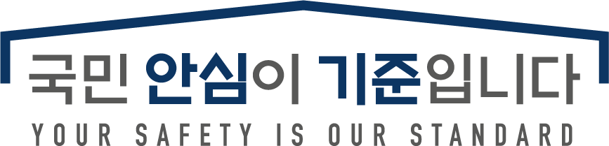

클린(Clean)
그리고 잇(Eat)
깨끗하다를 의미하는 Clean은 사용자들에게 식당의 청결 수준 및 위생정보를 제공할 것이라는 의미를 담고 있습니다.
Eat(잇)은 사용자들에게 위생적인 식당의 정보를 제공, 추천을 통해 깨끗한 식당을 소비자에게 제공하고 소비자들의 건강하고 깨끗한 음식의 섭취를 도모합니다.
★★★위생등급제 소개
음식점의 위생상태를 평가 후 우수한 업소에 한해, 등급을 지정하고 이를 공개 및 홍보함으로써 음식점 위생수준 향상, 식중독 예방 및 소비자의 선택권을 보장하는 제도입니다.
★★★
90점 이상 : 매우 우수
★★
85점 이상 90점 미만 : 우수
★
80점 이상 85점 미만 : 좋음
